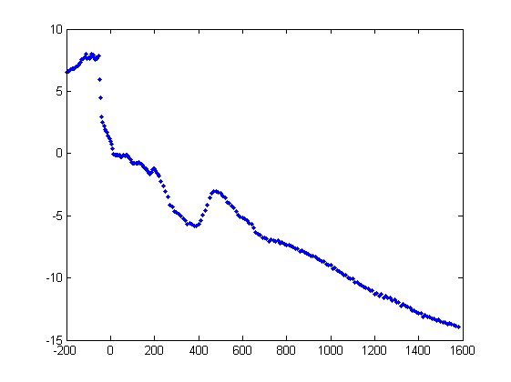

Locate the data file on the internet
To locate the netCDF data file, browse to the OPeNDAP website:
Find the Jarkus netCDF file by clicking on the following links: HYRAX ==> Rijkswaterstaat ==> JarKus ==> transects. Click on the link to the file and extract the direct link to the JarKus netCDF data file.
url = 'http://OPeNDAP .deltares.nl:8080/OPeNDAP/rijkswaterstaat/jarkus/profiles/transect.nc';
Alternatively, you can use the function jarkus_url. This has the advantage that it returns the link to the netCDF file on the Deltares network if it is available. This is faster than accessing data over the internet.
url = jarkus_url
url = http://opendap.deltares.nl:8080/thredds/dodsC/opendap/rijkswaterstaat/jarkus/profiles/transect.nc
View metadata
We can get data from this file using the function nc_varget. But first, let's see what is in the file using nc_dump. nc_dump shows all the metadata in the file. In the case of the JarKus file this is a lot.
nc_dump(url)
URL http://opendap.deltares.nl:8080/thredds/dodsC/opendap/rijkswaterstaat/jarkus/profiles/transect.nc {
dimensions:
alongshore = 2178 ;
stringsize = 100 ;
cross_shore = 1925 ;
time = UNLIMITED ; (44 currently)
variables:
// Preference 'PRESERVE_FVD': false,
// dimensions consistent with ncBrowse, not with native MATLAB netcdf package.
int32 id(alongshore), shape = [2178]
id:long_name = "identifier"
id:comment = "sum of area code (x1000000) and alongshore coordinate"
int32 areacode(alongshore), shape = [2178]
areacode:long_name = "area code"
areacode:comment = "codes for the 15 coastal areas as defined by rijkswaterstaat"
char areaname(alongshore,stringsize), shape = [2178 100]
areaname:long_name = "area name"
areaname:comment = "names for the 15 coastal areas as defined by rijkswaterstaat"
double alongshore(alongshore), shape = [2178]
alongshore:long_name = "alongshore coordinate"
alongshore:units = "m"
alongshore:comment = "alongshore coordinate within the 15 coastal areas as defined by rijkswaterstaat"
double cross_shore(cross_shore), shape = [1925]
cross_shore:long_name = "cross-shore coordinate"
cross_shore:units = "m"
cross_shore:comment = "cross-shore coordinate relative to the rsp (rijks strand paal)"
double time(time), shape = [44]
time:standard_name = "time"
time:axis = "T"
time:units = "days since 1970-01-01 00:00 +1:00"
time:comment = "measurement year see bathy and time_topo for more details"
int32 crs([]), shape = [1]
crs:grid_mapping_name = "Oblique Stereographic"
crs:semi_major_axis = 6.3774e+006
crs:semi_minor_axis = ""
crs:inverse_flattening = 299.153
crs:latitude_of_projection_origin = 52.1562
crs:longitude_of_projection_origin = 5.38764
crs:false_easting = 155000
crs:false_northing = 463000
crs:scale_factor_at_projection_origin = 0.999908
double angle(alongshore), shape = [2178]
angle:long_name = "angle of transect"
angle:units = "mradian"
angle:comment = "positive counter clockwise 0 east"
double mean_high_water(alongshore), shape = [2178]
mean_high_water:long_name = "mean high water"
mean_high_water:units = "m"
mean_high_water:comment = "mean high water relative to nap"
double mean_low_water(alongshore), shape = [2178]
mean_low_water:long_name = "mean low water"
mean_low_water:units = "m"
mean_low_water:comment = "mean low water relative to nap"
double rsp_x(alongshore), shape = [2178]
rsp_x:long_name = "location for beach pole"
rsp_x:units = "m"
rsp_x:axis = "X"
rsp_x:comment = "Location of the beach pole (Rijks strand paal)"
double rsp_y(alongshore), shape = [2178]
rsp_y:long_name = "location for beach pole"
rsp_y:units = "m"
rsp_y:axis = "Y"
rsp_y:comment = "Location of the beach pole (Rijks strand paal)"
double rsp_lat(alongshore), shape = [2178]
rsp_lat:long_name = "location for beach pole"
rsp_lat:units = "degrees_north"
rsp_lat:comment = "Location of the beach pole (Rijks strand paal)"
double rsp_lon(alongshore), shape = [2178]
rsp_lon:long_name = "location for beach pole"
rsp_lon:units = "degrees_east"
rsp_lon:comment = "Location of the beach pole (Rijks strand paal)"
double x(alongshore,cross_shore), shape = [2178 1925]
x:_CoordinateAxes = "alongshore cross_shore "
x:standard_name = "projection_x_coordinate"
x:units = "m"
x:axis = "X"
double y(alongshore,cross_shore), shape = [2178 1925]
y:_CoordinateAxes = "alongshore cross_shore "
y:standard_name = "projection_y_coordinate"
y:units = "m"
y:axis = "Y"
double lat(alongshore,cross_shore), shape = [2178 1925]
lat:_CoordinateAxes = "alongshore cross_shore "
lat:standard_name = "latitude"
lat:units = "degree_north"
lat:axis = "X"
double lon(alongshore,cross_shore), shape = [2178 1925]
lon:_CoordinateAxes = "alongshore cross_shore "
lon:standard_name = "longitude"
lon:units = "degree_east"
lon:axis = "Y"
int32 max_cross_shore_measurement(time,alongshore), shape = [44 2178]
max_cross_shore_measurement:_CoordinateAxes = "time alongshore "
max_cross_shore_measurement:long_name = "Maximum cross shore measurement index"
max_cross_shore_measurement:comment = "Index of the cross shore measurement (0 based)"
int32 min_cross_shore_measurement(time,alongshore), shape = [44 2178]
min_cross_shore_measurement:_CoordinateAxes = "time alongshore "
min_cross_shore_measurement:long_name = "Minimum cross shore measurement index"
min_cross_shore_measurement:comment = "Index of the cross shore measurement (0 based)"
double time_topo(time,alongshore), shape = [44 2178]
time_topo:_CoordinateAxes = "time alongshore "
time_topo:long_name = "measurement date of topography"
time_topo:units = "days since 1970-01-01 00:00 +1:00"
time_topo:comment = "Measurement date of the topography"
double time_bathy(time,alongshore), shape = [44 2178]
time_bathy:_CoordinateAxes = "time alongshore "
time_bathy:long_name = "measurement date of bathymetry"
time_bathy:units = "days since 1970-01-01 00:00 +1:00"
time_bathy:comment = "Measurement date of the bathymetry"
int16 origin(time,alongshore,cross_shore), shape = [44 2178 1925]
origin:_CoordinateAxes = "time alongshore cross_shore "
origin:long_name = "measurement method"
origin:comment = "Measurement method {1:"..", 3:"...", 5:"...."} used short for space considerations"
double altitude(time,alongshore,cross_shore), shape = [44 2178 1925]
altitude:_CoordinateAxes = "lat lon time alongshore cross_shore "
altitude:standard_name = "surface_altitude"
altitude:units = "m"
altitude:comment = "altitude above geoid (NAP)"
altitude:coordinates = "lat lon"
altitude:grid_mapping = "crs"
altitude:_FillValue = -9999
//global attributes:
:title = "Jarkus Data"
:institution = "Rijkswaterstaat"
:source = "on shore and off shore measurements"
:history = "Data received from Rijkswaterstaat, converted to netCDF on 23-Jul-2009"
:references = "Original source: http://www.watermarkt.nl/kustenzeebodem/Deltares storage: https://repos.deltares.nl/repos/mcdata/trunk/jarkus/Converted with script with $Id: jarkus_grid2netcdf.m 699 2009-07-17 07:54:10Z boer_g $"
:Conventions = "CF-1.4"
:spatial_ref = "COMPD_CS["Amersfoort / RD New + NAP",PROJCS["Amersfoort / RD New",GEOGCS["Amersfoort",DATUM["Amersfoort",SPHEROID["Bessel 1841",6377397.155,299.1528128,AUTHORITY["EPSG","7004"]],TOWGS84[565.04,49.91,465.84,-0.40939438743923684,-0.35970519561431136,1.868491000350572,0.8409828680306614],AUTHORITY["EPSG","6289"]],PRIMEM["Greenwich",0.0,AUTHORITY["EPSG","8901"]],UNIT["degree",0.017453292519943295],AXIS["Geodetic latitude",NORTH],AXIS["Geodetic longitude",EAST],AUTHORITY["EPSG","4289"]],PROJECTION["Oblique Stereographic",AUTHORITY["EPSG","9809"]],PARAMETER["central_meridian",5.387638888888891],PARAMETER["latitude_of_origin",52.15616055555556],PARAMETER["scale_factor",0.9999079],PARAMETER["false_easting",155000.0],PARAMETER["false_northing",463000.0],UNIT["m",1.0],AXIS["Easting",EAST],AXIS["Northing",NORTH],AUTHORITY["EPSG","28992"]],VERT_CS["Normaal Amsterdams Peil",VERT_DATUM["Normaal Amsterdams Peil",2005,AUTHORITY["EPSG","5109"]],UNIT["m",1.0],AXIS["Gravity-related height",UP],AUTHORITY["EPSG","5709"]],AUTHORITY["EPSG","7415"]]"
}
From the metadata we can see that there is a field 'id'. To get this data, use nc_varget.
id = nc_varget(url,'id');
id(1:10)
ans =
2000100
2000101
2000102
2000103
2000104
2000105
2000106
2000120
2000140
2000160
figure out which part of the data we need
The transect we are looking for is #3800, in area 7 (Noord-Holland). This transect has id 7003800. We know this from our previous nc_dump
id:comment = "sum of area code (x1000000) and alongshore coordinate"
transect_nr = find(id==7003800)
transect_nr =
1074
To get only data from this transect, we can give nc_varget some extra arguments. The first optional argument is the start index from where you want to extract data. The second argument indicates the number or entries you want along this dimension. In our case this is 1.
id = nc_varget(url,'id',transect_nr,1)
id =
7003825
The returned transect number is one off. This is becasue of zero based indexing of NetCDF files (versus 1 based indexing of MATLAB). This is easily corrected:
id = nc_varget(url,'id'); transect_nr = find(id==7003800)-1; id = nc_varget(url,'id',transect_nr,1)
id =
7003800
now that we have the correct transect, we can do the same for the year. the 'time' variable is specified in days since 1-1-1970, so the first (additional) step is to convert this to understandable numbers
year = 1970 + floor(nc_varget(url,'time')/365); year_nr = find(year == 1999)-1; year = nc_varget(url,'time',year_nr,1)
year =
10592
Extract the data
The cross shore coordinate relative to RSP (RijksStrandPalen) is stored in the cross_shore field and the z data in the altitude field. Extracting the xRSP data is simple:
xRSP = nc_varget(url,'cross_shore');
from the nc_dump we find:
double altitude(time,alongshore,cross_shore), shape = [44 2178 1925]
This means that the altitude data is stored in a 3d matrix, which is a function of time, alongshore and cross_shore cordinates. We want data for 1 year, and for 1 alongshore coordinate, but for all cross shore locations. Use -1 in the second argument to ask for all data in that dimension:
z = nc_varget(url,'altitude',[year_nr,transect_nr,0],[1,1,-1]);
Note that the first z poi9tn we want data form is 0 becasue of the zero besed indexing!
Not for every possible cross shore location, there is altitude information. For our case we might as well leave out those data points:
x = xRSP(~isnan(z)); z = z(~isnan(z));
Plot the data
always plot data to check if it's ok:
plot(x,z,'.b')
